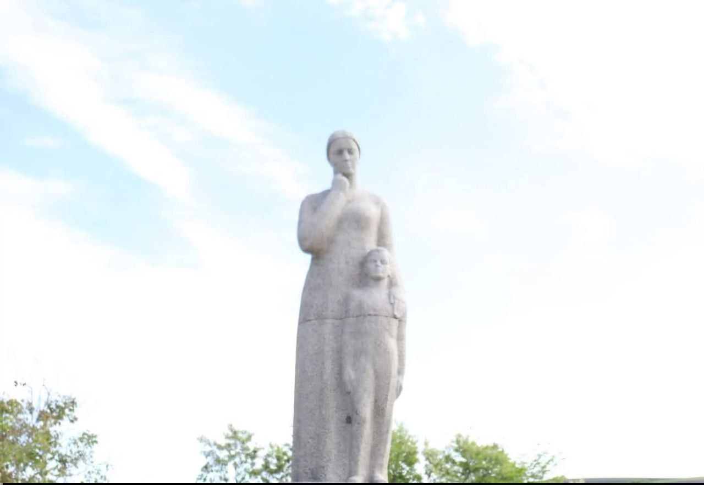

Monumentul eroilor

Monumentul eroilor din satul Iabloana, raionul Glodeni, reprezintă unul dintre cele mai importante simboluri ale memoriei locale. Acesta este ridicat în cinstea sătenilor care și-au pierdut viața în războaie, în special în Primul și al Doilea Război Mondial. Prin existența lui, comunitatea păstrează vie amintirea celor care au luptat și s-au jertfit pentru pace și libertate.
Monumentul este amplasat, de regulă, într-un loc central al satului, ceea ce îi oferă vizibilitate și importanță. Din punct de vedere arhitectural, el urmează stilul tradițional al monumentelor din Republica Moldova. Fiind realizat din piatră sau beton și având forma unui obelisc sau a unei cruci. În unele cazuri, pe monument sunt inscripționate numele eroilor, ca semn de respect și recunoștință.
Rolul monumentului nu este doar decorativ, ci și educativ și moral. Aici au loc diferite ceremonii comemorative, cum ar fi depuneri de flori sau momente de reculegere. Mai ales cu ocazia Zilei Eroilor. Astfel, generațiile tinere au posibilitatea să învețe despre trecut și să înțeleagă importanța sacrificiului făcut de înaintași.
Monumentul rămâne un simbol al identității locale și al respectului față de istorie. Legând trecutul de prezent și amintind permanent de valorile precum curajul, sacrificiul și memoria colectivă.